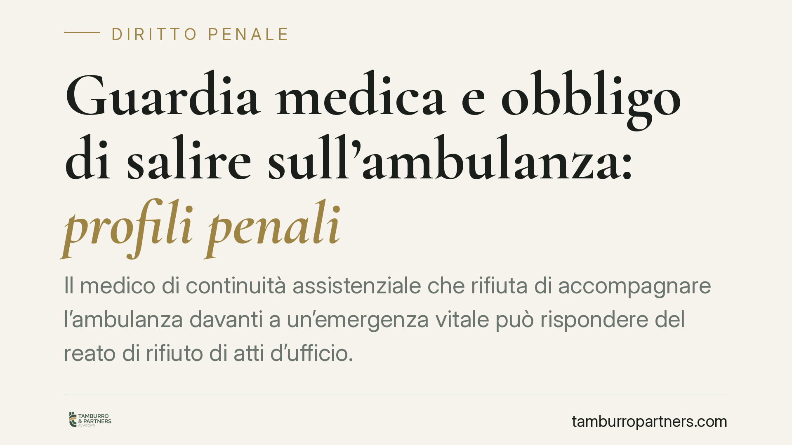

Guardia medica e obbligo di salire sull'ambulanza: profili penali
Il medico di continuità assistenziale che rifiuta di accompagnare l'ambulanza davanti a un'emergenza vitale può rispondere del reato di rifiuto di atti d'ufficio. La Cassazione ha più volte chiarito i confini dell'obbligo. Vediamo quando scatta, cosa dice l'art. 328 del Codice penale e quali margini di valutazione restano al sanitario di turno.

Il fatto e perché conta
La questione è ricorrente nella prassi: durante il turno di guardia medica (oggi continuità assistenziale) arriva una richiesta di intervento per un paziente in condizioni gravi. Il medico deve limitarsi a fornire indicazioni telefoniche o è tenuto a salire sull'ambulanza e raggiungere il luogo dell'emergenza?
La risposta non è indifferente. Un rifiuto ingiustificato, quando ricorre un'urgenza indifferibile, può integrare un reato. E la responsabilità non è solo disciplinare o civile: è penale.
Inquadramento normativo
La norma di riferimento è l'art. 328, comma 1, del Codice penale, che punisce il pubblico ufficiale o l'incaricato di pubblico servizio il quale "indebitamente rifiuta un atto del suo ufficio che, per ragioni di giustizia o di sicurezza pubblica, o di ordine pubblico o di igiene e sanità, deve essere compiuto senza ritardo". La pena è la reclusione da sei mesi a due anni.
Il medico di continuità assistenziale, nell'esercizio della funzione, riveste la qualifica di incaricato di pubblico servizio. Rientra quindi tra i soggetti destinatari della norma. L'atto da compiere "senza ritardo" è, in questo caso, la prestazione sanitaria indifferibile a tutela della salute del paziente.
Due elementi vanno letti con attenzione. Il primo è l'avverbio *indebitamente*: il rifiuto è penalmente rilevante solo se privo di giustificazione. Il secondo è il carattere di urgenza indifferibile: non ogni chiamata impone la presenza fisica del medico, ma solo quella in cui il ritardo o l'assenza possono compromettere la salute o la vita.
Cosa dice la Cassazione
La Corte di Cassazione ha delineato con chiarezza il perimetro dell'obbligo. Il medico non è tenuto ad accompagnare l'ambulanza in ogni caso: deve farlo quando la situazione descritta lascia fondatamente presumere un pericolo attuale per la vita o l'integrità del paziente, tale da richiedere un intervento qualificato che il personale del soccorso non può garantire.
Il punto centrale è la valutazione ex ante. La condotta del sanitario si giudica in base alle informazioni disponibili al momento della chiamata, non sulla base di ciò che è emerso dopo. Se dai dati comunicati emergeva un quadro di emergenza vitale, il rifiuto di intervenire di persona è penalmente rilevante, a prescindere dall'esito.
La giurisprudenza valorizza inoltre la posizione di garanzia del medico: chi assume la funzione di continuità assistenziale si obbliga a tutelare la salute dei pazienti del proprio ambito, con i mezzi e le competenze che il ruolo comporta.
Implicazioni pratiche
Per il medico di turno il messaggio è netto. La discrezionalità clinica esiste, ma non è illimitata. Non è invocabile un rifiuto generico fondato su prassi organizzative interne, su carichi di lavoro o sulla convinzione che il personale dell'ambulanza "possa cavarsela".
Quando la descrizione dei sintomi indica un rischio grave e attuale, l'obbligo di presenza si consolida. La decisione di non intervenire deve poggiare su una valutazione sanitaria motivata e, per quanto possibile, documentata.
Sul piano probatorio, ciò significa che la ricostruzione del contenuto della chiamata diventa decisiva: cosa è stato riferito, quali sintomi, con quale grado di allarme.
Cosa fare in concreto
- Valutare la chiamata sui dati disponibili: annota sintomi, parametri riferiti e livello di allarme comunicato dal richiedente o dal personale del soccorso.
- Documentare ogni decisione: se scegli di non salire sull'ambulanza, registra le ragioni cliniche che escludono l'urgenza indifferibile.
- Non delegare la valutazione dell'emergenza a criteri organizzativi o a stanchezza del turno: il metro è sempre il rischio per il paziente.
- In caso di dubbio, propendere per l'intervento: la valutazione ex ante penalizza l'inazione ingiustificata più della prudenza.
- Conservare la documentazione del turno: verbali, registrazioni e annotazioni sono la principale difesa in sede di eventuale contestazione.
Conclusione
L'obbligo di salire sull'ambulanza non è automatico, ma diventa cogente di fronte all'emergenza vitale indifferibile. La linea di confine tra legittima valutazione clinica e rifiuto punibile passa dalla ragionevolezza della decisione al momento della chiamata e dalla sua tracciabilità. Un tema in cui la corretta gestione della documentazione fa spesso la differenza tra assoluzione e condanna.
---
*Contributo informativo a cura di Tamburro & Partners - Avv. Giuseppe Tamburro. Non costituisce parere legale.*
Ogni condominio ha una storia a sé.
Se gestisci un'amministrazione e vuoi un confronto su una specifica questione condominiale, scrivi allo studio. Ti rispondiamo entro un giorno lavorativo.